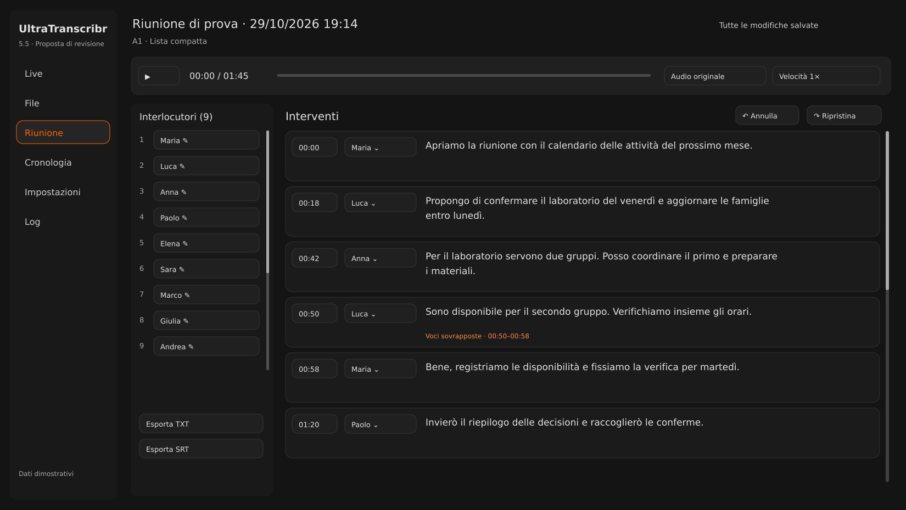

<!doctype html><html lang="it"><meta charset="utf-8"><title>UltraTranscribr · 10 proposte editor</title>
<style>body{margin:0;background:#141414;color:#e1e1e1;font:16px system-ui}header{display:flex;gap:18px;align-items:center;padding:16px;position:sticky;top:0;background:#141414}select,a{color:#e1e1e1;background:#252525;padding:10px;border:1px solid #555;border-radius:8px}img{width:100%;display:block}section{max-width:1650px;margin:auto}a{margin-left:auto}</style>
<header><strong>Revisione · confronto delle dieci proposte</strong><select id="variant" aria-label="Layout"><option value="1">Lista compatta</option><option value="2">Editor a due colonne</option><option value="3">Documento continuo</option><option value="4">Timeline degli speaker</option><option value="5">Revisione guidata</option></select><select id="follow" aria-label="Sincronizzazione"><option value="A">Solo UI</option><option value="B">Con follow audio</option></select><a id="full" href="A1.svg">Apri immagine</a></header><section></section><script>
const variant=document.getElementById('variant'), follow=document.getElementById('follow');
function show(){const path=follow.value+variant.value+'.svg';document.getElementById('preview').src=path;document.getElementById('full').href=path;}
variant.onchange=show;follow.onchange=show;</script></html>